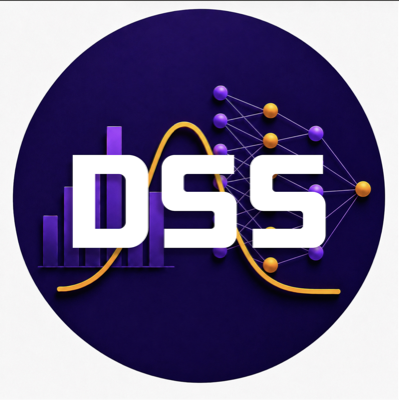
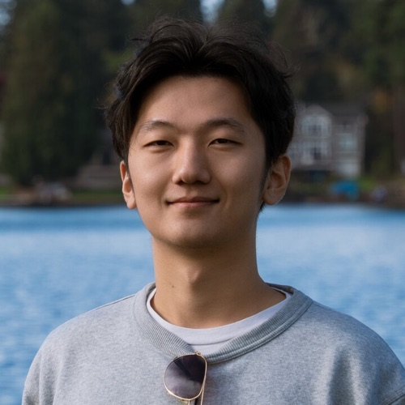

Making AI accessible to all.

PhD Student in Statistics with a focus on machine learning and optimization.
I like workout/basketball/badminton/video games. Also, I drive.
If you want to learn more academic or professional about me, feel free to check out my website by simply googling me.
I'm a dual Ph.D. student in Astrophysics and Astrobiology at UW, applying machine learning and statistical modeling to explore cosmic mysteries—from dark matter using stellar streams to asteroid detection and binary star identification in large datasets.
With a foundation from a dual B.S. in Astrophysics and Geophysics at UCLA and a dual M.S. in Astrophysics and Statistics at UW, I have honed expertise in time-series analysis, convolutional neural networks, and simulation-based inference with normalizing flows.
My leadership roles, including Founder and President of the Data Science Society at UW, sharpened my team and communication skills.
Beyond research, I'm a passionate astrophotographer and traveler, driven to push the boundaries of astrophysics and data science.
Senior Undergraduate student at Applied and Computational Mathematical Science: DATA SCIENCES AND STATISTICS. My research interest is in dimension reduction and LLM.
I like play FPS games (CS2, Valorant, and Apex Legend)
My name is Kimberly, and I'm a freshman at UW, planning to major in Informatics. What drew me to Informatics is its incredible interdisciplinary nature—combining technology, design, and human interaction in a way that directly impacts our world.
I am a founder of a media team so I use the internet as a tool to amplify underrepresented voices. I'm also a dog person!! I dedicated myself to charitable works by protecting stray animals back in China.